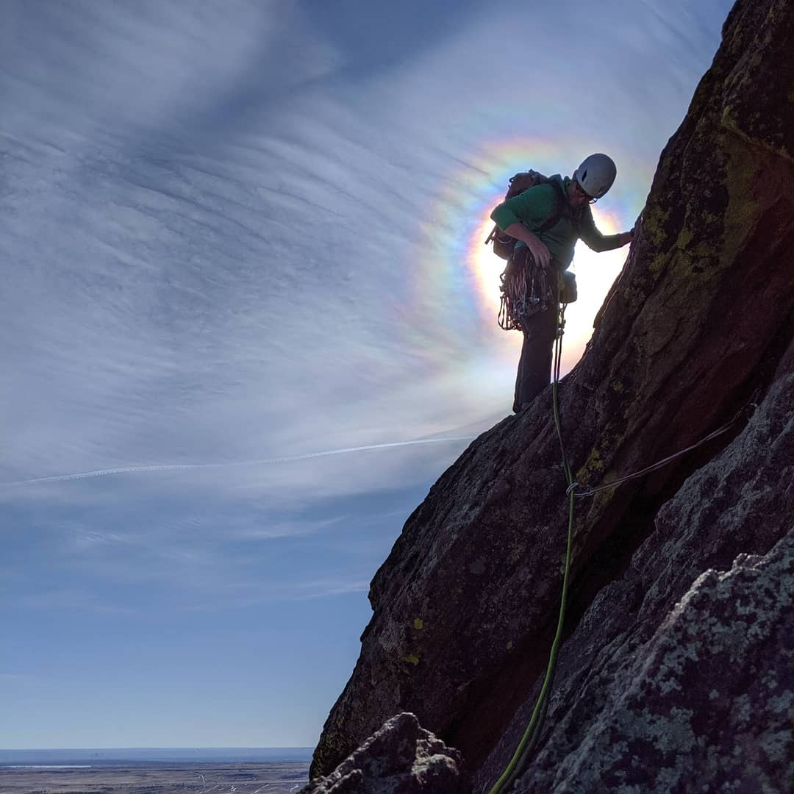

Jones Pass is a popular backcountry recreation area near Denver, Colorado. This map was a collaboration between the former head of avalanche safety of Powder Addiction and I when we were both studying at the Metropolitan State University of Denver. I carry this map on Jones Pass every time I ski there and frequently use it to help orient other backcountry users.
Bear Lake Slab Avalanche
The skiing near Bear Lake in Rocky Mountain National Park is incredible and potentially deadly. This map represents my research into depicting the slab avalanche danger based on specific conditions. This is not intended to forecast, but instead to augment the standard avalanche danger rose in education settings.
Bear Lake Storm Slab Avalanche
The skiing near Bear Lake in Rocky Mountain National Park is incredible and potentially deadly. This map represents my research into depicting the storm slab avalanche danger based on specific conditions. This is not intended to forecast, but instead to augment the standard avalanche danger rose in education settings.
Berthoud Pass Avalanche Terrain Map
Berthoud Pass is a very popular backcountry ski and snowboard area near Winter Park, Colorado. It holds some dangerous avalanche terrain that frequently catches unsuspecting backcountry travelers off guard. This map depicts the avalanche terrain based on slope near the summit of the pass.
Berthoud Pass is a very popular backcountry ski and snowboard area near Winter Park, Colorado. It holds some dangerous avalanche terrain that frequently catches unsuspecting backcountry travelers off guard. This map depicts the possible distribution of slab avalanche risk based on a given days weather reports. This is not intended to forecast, but instead to augment the standard avalanche danger rose in education settings.
Berthoud Pass Avalanche Terrain Map
Berthoud Pass is a very popular backcountry ski and snowboard area near Winter Park, Colorado. It is also one of the windiest. This map depicts the possible distribution of wind slab avalanche risk based on the prevailing winds in the area. This is not intended to forecast, but instead to augment the standard avalanche danger rose in education settings.
I completed the Bike Race Map for my Graphic Design in Cartography class in 2020. It depicts a truly grueling bike race throughout the Colorado Rocky Mountains.
Battle for Riva Ridge (In Progress)
The Battle of Riva Ridge was the first true combat test for the fabled 10th Mountain Division. The Soldiers of the 10th Mountain leveraged their unique esprit de corps, physical fitness, and mountaineering prowess to pull off an attack everyone thought was impossible, especially for an untested unit. This is my work so far creating a poster map to donate to the 10th Mountain Association.
Long Form Infographic
I completed this long form infographic for my Graphic Design in Cartography class in 2020. It was first foray into the world of Adobe Illustrator. I was interested into looking at the distribution of wealth among first term active duty US military service members at the height of the Iraq and Afghanistan Wars as compared to prior to 9/11.

Ryan Teter
Born and raised in Colorado, I grew up looking at the Rocky Mountains. After serving in the active duty Army I began to explore them in earnest. My fascination in maps led me to a career creating maps and my favorite maps have the most relief. I have studied avalanche science and military mountain operations both as an amateur and professional. I enjoy depicting both with maps. Please download my resume if you are interested in learning more.
Curriculum Vitae
Work Experience
-Cartographer at US Geological Survey from 2014 to Present working on the National Hydrography Dataset (NHD) as an internal editor and now as a technical point of contact. -GIS Research Assistant at the Metropolitan State University of Denver from 2013 to 2014 working on a research project concerning avalanches and climatology in Colorado. -GIS Intern at the City and County of Broomfield in 2013 working on GPS collection and processing.
Education
-Currently pursuing a Masters in Web Mapping and GIS Development at the University of Wisconsin at Madison. Anticipating graduating in Spring 2023. -Bachelor of Science in Land Use with a Concentration in GIS and Environmental Science Area of Interest from the Metropolitan State University of Denver in May 2014. -Associate of Arts in Psychology and Associate of General Studies in Outdoor Education from Red Rocks Community College in December 2011.
Skills
-ArcGIS 10.X, ArcGIS 10-10.5.1, ArcPro 2.2.4, ArcWorkflow Manager, Spyder, Python, Jira, ENVI, and R
-American Institute for Avalanche Research and Education (AIARE) Level 1, AIARE Level 2, AIARE Avalanche Rescue, AIARE REC 2, Leave No Trace Trainer, Wilderness First Responder, and Level 2 Military Mountaineer "Assault Climber"
Bringing a unique understanding of the mountains to people through maps.